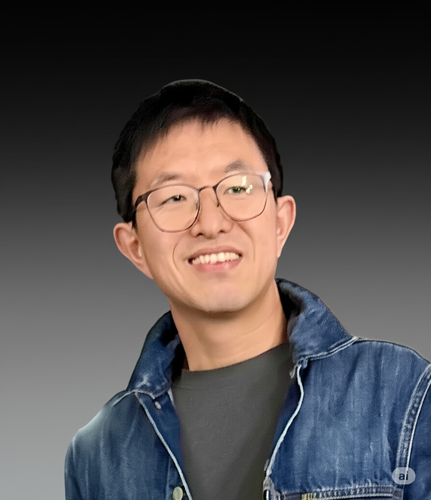

Foundation Model Systems
Post-training & evaluation frameworks, metrics design, inference footprint optimization, sampling strategies, distillation & student adaptation
AI / ML Executive & Researcher
Cofounder & CTO, Alchedata AI·20+ Years in AI/ML
Executive-level AI/ML leader specializing in foundation model post-training, evaluation, and production-scale personalization — from Big Tech to startups, research labs to FDA-cleared medical devices.

Fremont, California
About Me
I'm an executive-level AI/ML leader with a proven track record of leading teams of 40+ — including mentoring managers — building scalable ML infrastructure, and shipping high-impact AI systems in demanding production environments.
My hands-on expertise spans foundation model post-training (SFT, RLHF, RLSF), agentic RL environments, continuous evaluation and regression prevention, and cost/latency optimization for model serving.
I've built and led organizations at Amazon, IBM Research, Visa, Zepp Health, and AliveCor — and I'm now driving the future of agentic AI data pipelines as Cofounder and CTO of Alchedata AI.
Core Competencies
Post-training & evaluation frameworks, metrics design, inference footprint optimization, sampling strategies, distillation & student adaptation
Reward modeling, evaluator stacks, dataset scoring & selection, RLHF / agentic RL loops, safety & quality gates
Retrieval & ranking, recommender systems, embeddings, experimentation, user & item modeling at scale
Multi-agent orchestration, tool use, evaluation-driven improvement loops, agentic RL, workflow automation
Team-of-teams leadership, hiring & developing managers/scientists, 12-month roadmaps, cross-org execution, stakeholder communication
Career
Alchedata AI
Own AI technical strategy; build and lead the engineering/ML organization; partner on fundraising. Built a Data Platform-as-a-Service and the MaidX multi-agent orchestration layer for end-to-end post-training data pipelines.
KronosAI
Led the development of foundation models for electromagnetics, acoustics, and fluid dynamics, translating physics AI from research to industrial applications to accelerate innovation.
Amazon Prime Video
Spearheaded all facets of Prime Video's recommendation and search systems, leading integration of Generative AI with personalization frameworks. Grew team from 10 to 40 scientists and engineers.
Visa Research
Built and led a high-performing AI research team from 0 to 15 researchers. Delivered strategic updates to C-suite including CEO and CTO.
AIBEE Inc. (USA)
Zepp Health (USA)
AliveCor Inc.
IBM Research – Almaden
Academic Background
PhD in Computer Science · GPA 4.0 / 4.0
2006
MS in Computer Science · GPA 4.0 / 4.0
2003
BS in Electrical Engineering · GPA 3.9 / 4.0
2001
Recognition
Best Paper Award, ACM RecSys 2022 — "Denoising Self-Attentive Sequential Recommendation" (with former Visa Research team)
IBM Invention Plateau Award, IBM Almaden Research Center (2010, 2013)
IBM Invention Achievement Award, IBM Almaden Research Center (2008–2011)
Best Paper Award, ACM International Conference on Multimedia Information Retrieval (2010)
IBM Technical Accomplishment in Multimodal Healthcare Analytics for Clinical Decision Support (2009)
Best Poster Award, Computers in Cardiology, Bologna, Italy (2008)
CVPR Travel Grant Award, IEEE Computer Society (2006)
Outstanding Academic Achievement, University of Florida (2002)
Outstanding Academic Scholarship, USTC — top 5% undergraduate (1996, 1997, 1999, 2000)
Chen Hsong Industrial Scholarship, USTC — awarded to top 1% (only 45 students in China, 1998)
Research
80+ publications · 5,000+ citations · 70+ patents. A selection of representative work spanning agentic AI, foundation models, recommender systems, and adversarial ML.
2026
viXra preprint, 2026
2025
ACM International Conference on Information and Knowledge Management (CIKM), 2025
2024
IEEE Transactions on Knowledge and Data Engineering, 2024
2024
arXiv preprint, 2024
2022
ACM RecSys 2022 Best Paper
2021
IEEE/CVF International Conference on Computer Vision (ICCV), 2021
2004
IEEE Transactions on Information Theory, 2004